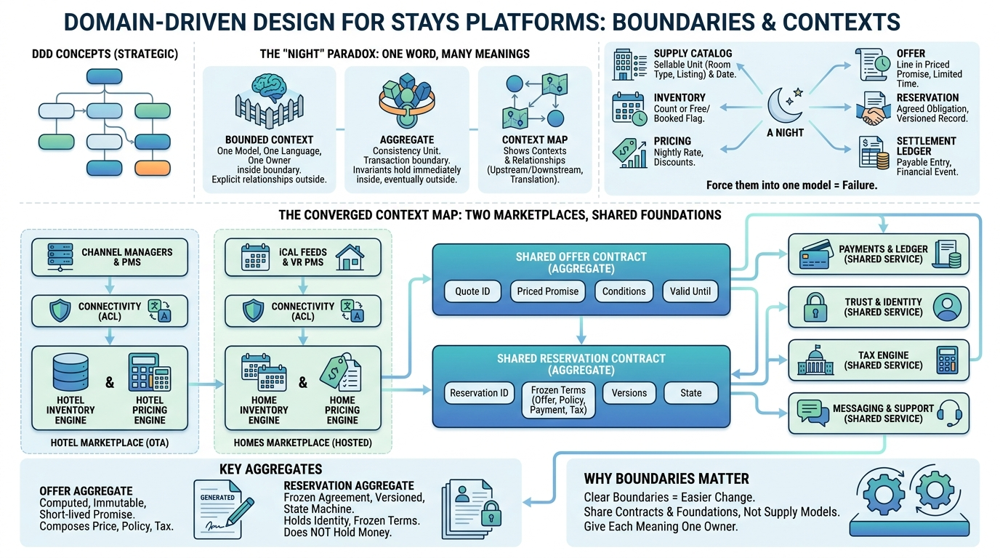

Part I — MARKETPLACE: The Business of a Night's Stay
Drawing the Lines: Bounded Contexts for Stays

Image generated by Google Gemini (gemini-3-pro-image-preview)
Part I — MARKETPLACE: The Business of a Night's Stay

Image generated by Google Gemini (gemini-3-pro-image-preview)